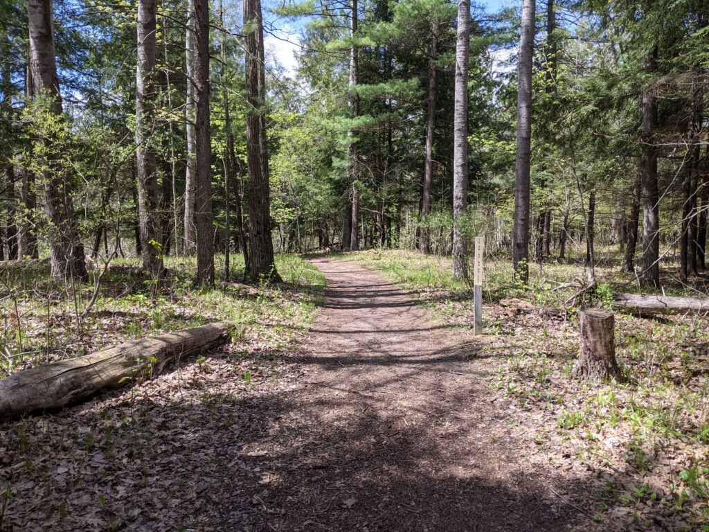
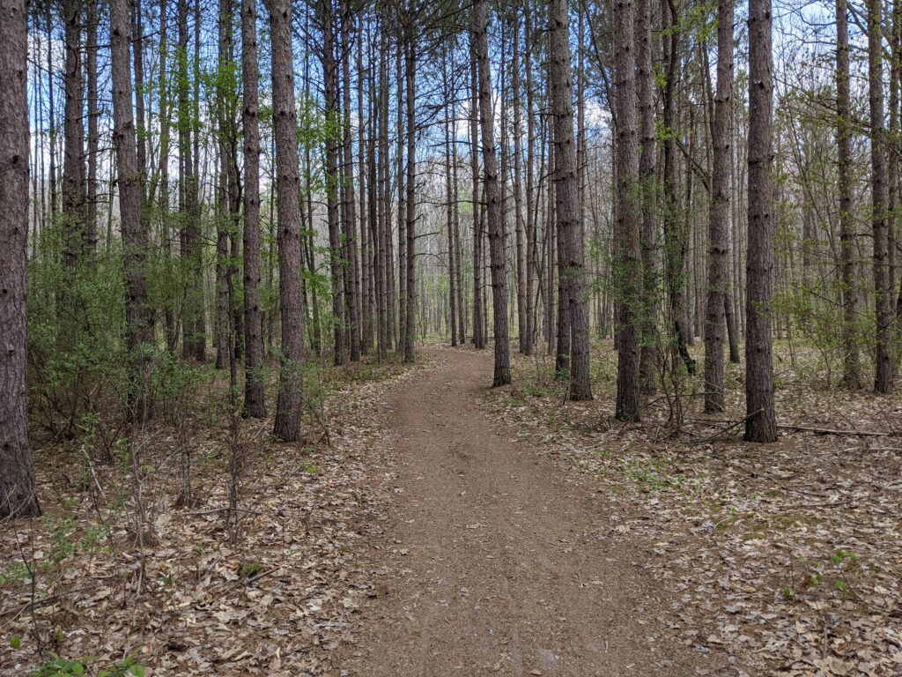
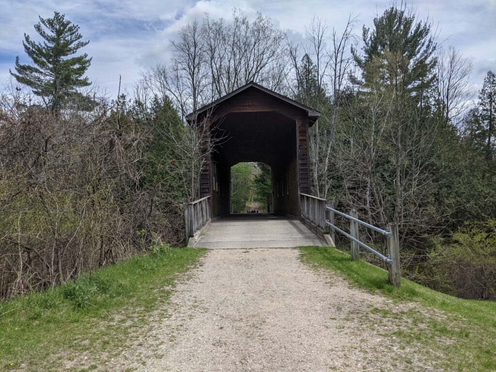
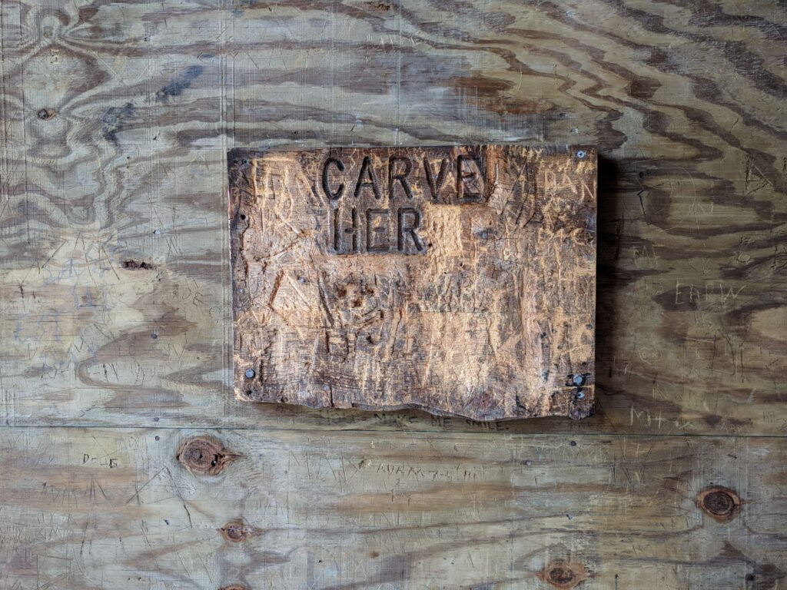
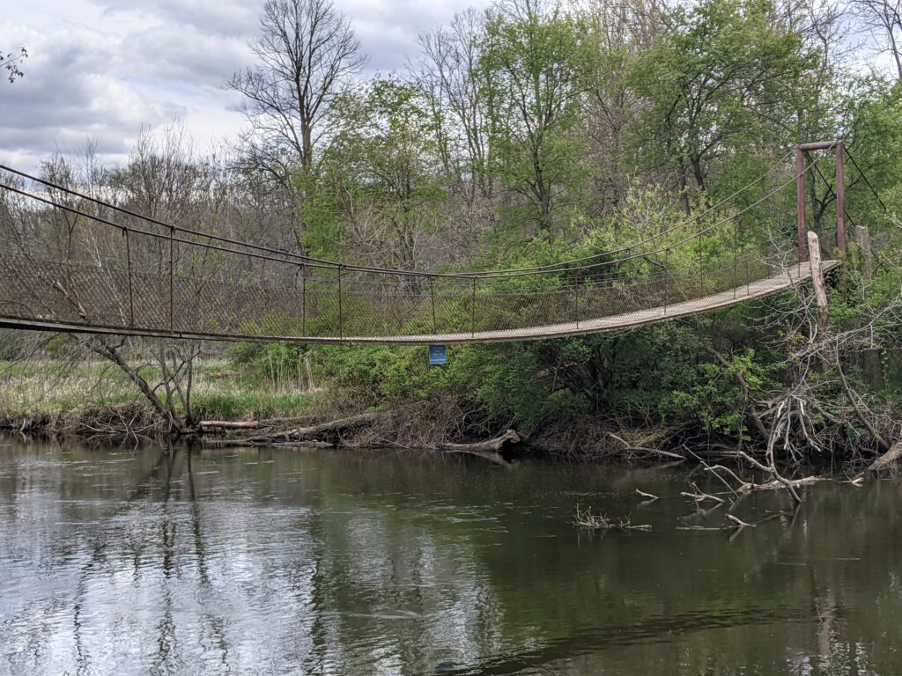

A man is a very small thing, and the night is very large and full of wonders
I’m back visiting my parents in Mt. Pleasant, Michigan, where I grew up and spent the first 18 years of my life. Mt. Pleasant is a small place. Even now, the permanent population is about 26,000. Central Michigan University, when it’s in session, adds another 20,000. It’s not even 8 square miles. A man can walk from Pickard Road, at the northern edge, to Broomfield in the south, in under an hour. Growing up, it didn’t seem that way. I counted it as a major achievement when I first bicycled to the southern edge of CMU’s campus. As we get older the familiar shrinks even as the unfamiliar expands.
Deerfield Park is one of several parks on the Chippewa River, which runs through the county and city. It’s about five miles west of town, a stone’s throw though it didn’t seem that way once. It’s a little under two miles north-south and a little under a mile across at its widest point, though in that space are a multitude of trails, campsites, a generous sledding hill less dangerous than Mission Creek, and no fewer than four crossings of the river. In my memory, there was always a bridge that was hard to find, hidden away off the beaten path. Today, with clear skies and time to kill, I resolved to find all four bridges and settle the matter.
It took about 90 minutes; Google Maps says I walked 3.3 miles. After parking, I started by walking west on the Lewis Pontiac Trail. Pontiac, who died in 1990, was an elder in the Saginaw Chippewa Indian Tribe, on whose land about half of Mt. Pleasant sits (that’s a story for a different day). After a quarter-mile, you cross the first bridge and enter the park interior. I saw a number of fishermen while I was out and about and, respecting their privacy, I didn’t get a picture of the bridge this time.


These are both typical examples of unimproved trails in mid-Michigan.
There’s a real web of trails to choose from, official and otherwise. The River Loop, which I generally followed, goes south-south-west along the Chippewa River. The Raceway Path takes an airline south. If I’ve ever been on it I don’t remember it. Once you get on the River Loop there’s a dirt trail that goes right along the river bank, and I followed that for a while.
After half a mile I made it to the covered bridge that takes you over the river to the Covered Bridge Trail. I can’t remember walking that trail and I don’t think it goes much of anywhere. There’s a loop to the north, and access to Winn Road, but it’s not a park entrance. One thing that always amused me was a small board in the interior, with an invitation to carve it, and not the rest of the bridge. I hope the installers didn’t have high hopes for this feature.


To be fairs there was plenty of carving on the board…
I backtracked and headed south on the River Loop toward the “Swinging Bridge”, so named because of how it responds to every step you take on it. Numerous trails peeled off into the park interior but I ignored them as I pressed south. This was the bridge I’d always had trouble with, whose location I was so uncertain about. I suspect on past camping trips I’d found it via the Wildwood Pathway, coming down from Camp Weidman. Anyway, after a mile there it was. Three down, one to go, and to collect it I was going all the way back, almost all the way to the car.
This far south I had every path available to me, and I tried a new one–the Goshawk Loop, which follows the Wildwood Pathway but veers east and ascends a small ridge. You leave the river at this point and head into the interior, first east and then north. It was about 1.3 miles to the entrance to Camp Weidman, and the trail was somewhat steep at times, though nothing compared to some of the climbing I’ve had to do around the Delaware Water Gap. Isabella County is south of where the glaciers stopped, so the terrain isn’t all that dramatic.
Back on the Wildwood Pathway, I took a familiar detour to Camp Weidman. Located on the east side of Deerfield Park, it is or was owned by the Boy Scouts but several of the trails connect. I think the first time I wandered far enough from Weidman (as a scout) and discovered that I was in Deerfield I thought I’d walked through the wardrobe into Narnia. Weidman was something of a boring campsite. It was flat, it was just off Vandecar Road, and it actually had a physical shelter. On the other hand, you were close to town if you need to bug out, and there was canoe access so it was ideal for an undemanding canoe camping trip. Also, the only real requirement for a good game of “Bloody Murder” is a dark night.
At Weidman you pick up the Chippewa River, which flows east-west through the northern part of Deerfield Park. Rejoining the Wildwood Pathway and walking north, you cross another “Swinging Bridge.” I think this partially accounts for my childhood confusion, but who knows. This bridge is also very “responsive”; not the sort of responsive design I’m used to!
